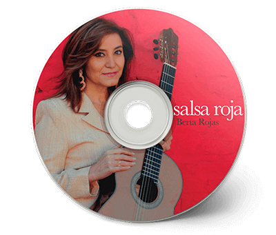
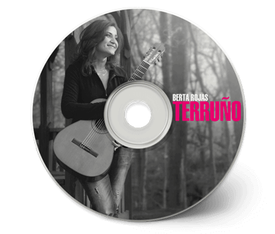
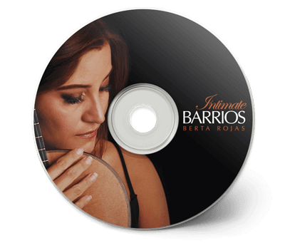
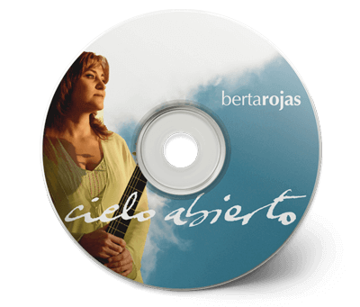

DISCOGRAFÍA - BERTA ROJAS

“Salsa Roja” se constituye en una representación de vida y amor. Por
encima de la pobreza,
la tristeza, la soledad; la música, el amor y el amor a la música, hacen de este disco una danza
sin final.

Todo lo que ella ejecuta es presentado con un gusto impecable; cada
frase y matiz ha sido
claramente bien pensado antes de alcanzar al disco o la plataforma de concierto.

Berta Rojas es, para mí, uno de los músicos más inspiradores que he
tenido el placer de
escuchar en los últimos años. En particular, su interpretación de la música de Agustín Barrios,
su compatriota, no tiene rival

Solo una vez en mucho tiempo aparece un CD de guitarra clásica que es
tan impecable en
todos los aspectos del profesionalismo -un arte musical que conmueve el corazón, interesante
repertorio, y excelente producción técnica. “Cielo Abierto”, el CD de la guitarrista paraguaya
Berta Rojas es uno de ellos.